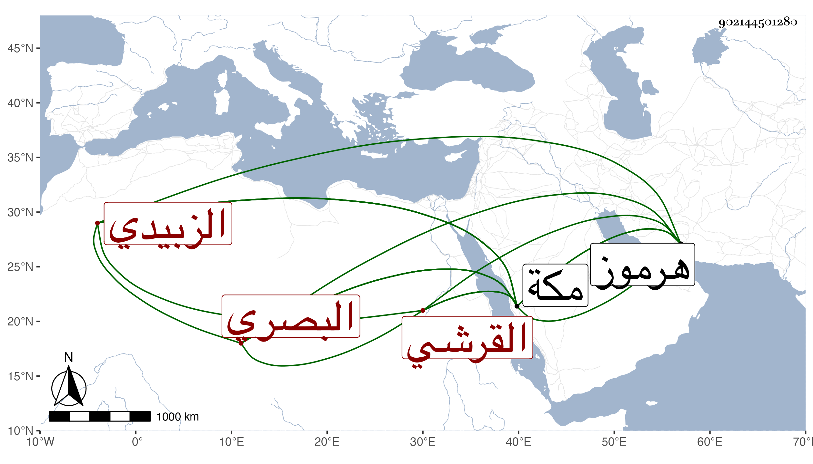

0902Sakhawi.DawLamic.ITO20230111-ara1.EIS1600.902144501280
Biography ID: 902144501280
834
علي بن عبد الكريم بن محمد بن محمد بن علي بن عبد الكريم بن دليم زين العابدين بن جلال الدين القرشي الزبيدي البصري نزيل مكة والتاجر ابن التاجر . ولد في ذي الحجة سنة ست وعشرين بهرموز . ونشأ بها فحفظ القرآن وهو ابن إحدى عشرة ثم سافر منها إلى مكة في أحد الجمادين سنة سبع وثلاثين واستوطنها حتى مات بها في سلخ شعبان سنة سبعين . أرخه ابن فهد . قال : ورأيت له تعليقا بخطه فيه وقائع وحوادث ومواليد ووفيات متعلقة بمكة .
